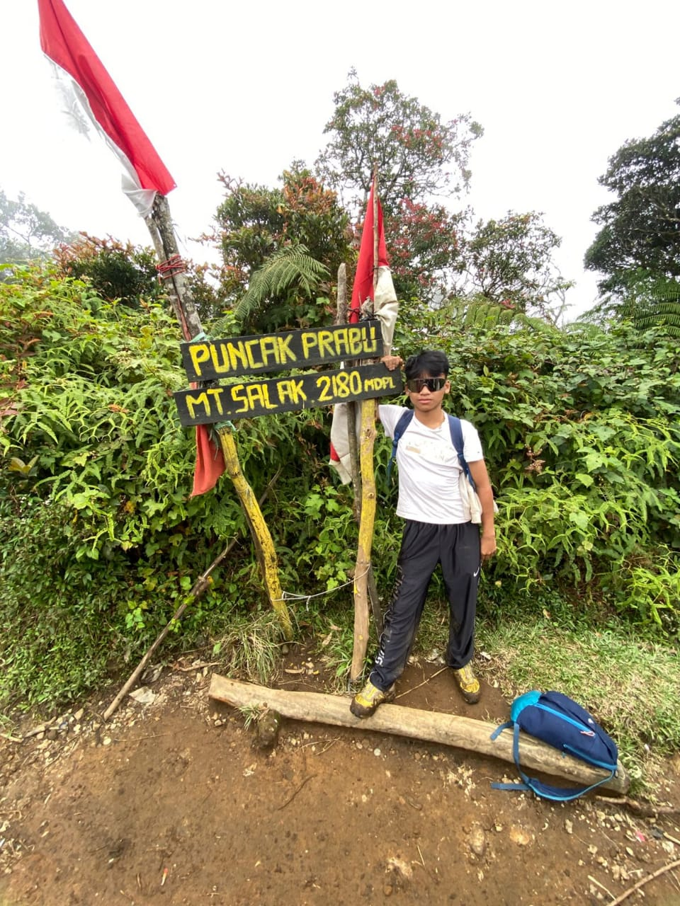
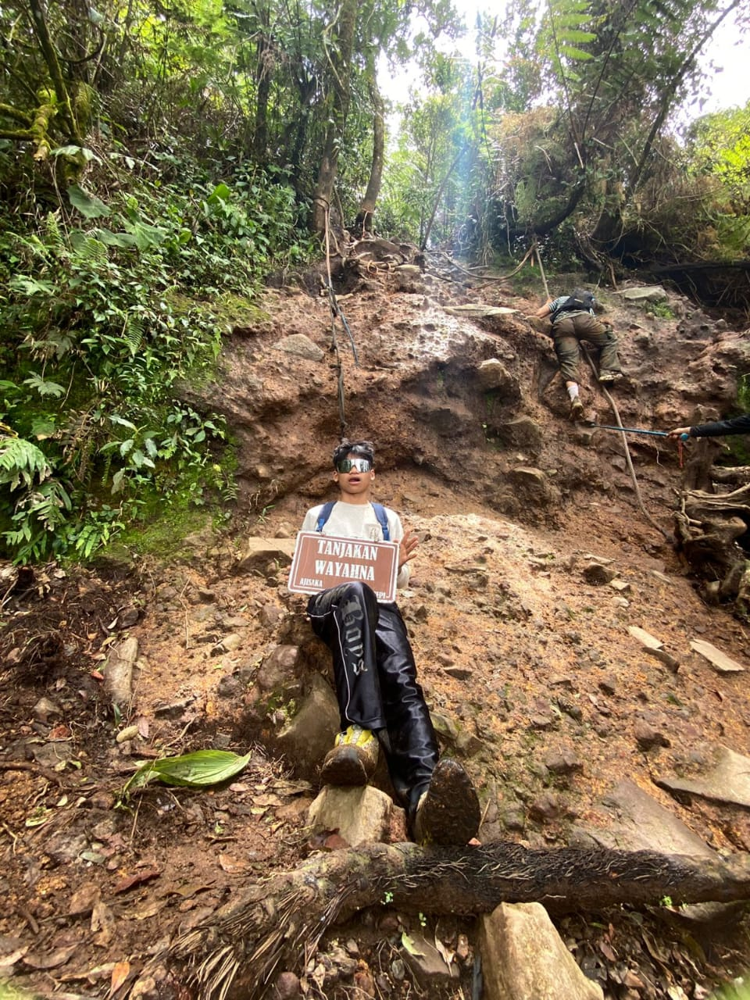
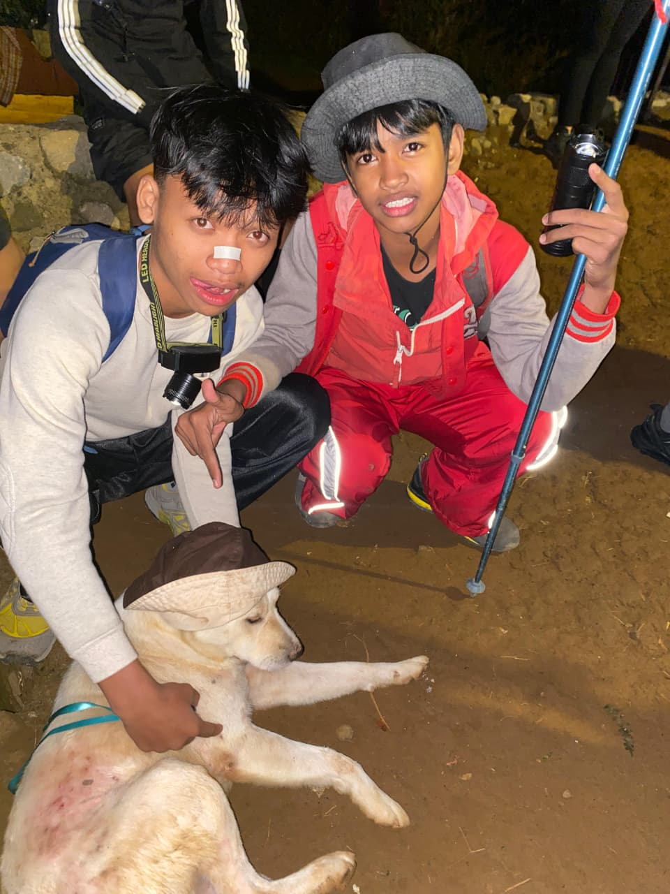

🏔️ My Hiking Experience on Mount Salak
🏕️ Night Camp
🐾 Trail Dog
🧗 Rope Climb
📸 Summit Memories

Puncak Prabu — The Top of Our Journey

Tanjakan Wayahna — Rope Climb Adventure

Night Camp — New Friends Under the Stars